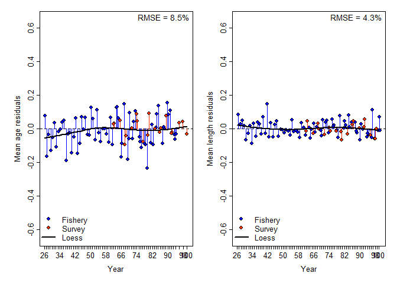

Build Status
The R package ss3diags enables users to apply advanced diagnostics to evaluate a Stock Synthesis model. Diagnostics include residual analyses, hindcasting and cross-validation techniques, and retrospective analyses. Functions also allow users to reproduce the key model diagnostics plots that presented in the paper ‘A Cookbook for Using Model Diagnostics in Integrated Stock Assessments’.
A handbook with detailed User guidelines for Advanced Model Diagnostics with ss3diags is currently being finalized.
In addition, the ss3diags Github respository provides fully commented step-by-step R recipes on how to:
- Do log-likelood profiling for R0
- Run the ASPM diagnostic
- Conduct iterative hindcasts for restrospective analysis with forecasts
- Do Jitter tests
with Stock Synthesis by making use of a comprehensive collection of R functions available in the R package r4ss
Installation
ss3diags is not currently supported on CRAN. You can install the development version of ss3diags from GitHub with:
# install.packages("remotes")
remotes::install_github("PIFSCstockassessments/ss3diags")Once the package is installed it can be loaded by:
Applying ss3diags for Model Diagnostics
Example Model
For demonstration purposes, a simple, cod-like SS model was simulated using ss3sim. The model includes 2 fleets, one fishery and one survey. Catch data is available from year 26 to year 100 (final year of model). An index of abundance is available from the survey fleet for years 62 - 100. No discard data was simulated. Simulated composition data includes length (fleets 1 and 2), age (fleets 1 and 2), and conditional age-at-length (fleet 1). The SS output for this model can be loaded into the environment using
data("simple")Residual Diagnostics
ss3diags provides 4 main functions to evaluate model misspecification: SSplotRunstest() (and SSrunstest()), SSplotJABBAres(), SSplotRetro(), and SShcbias(). A runs test is a test for randomness and in the runstest functions, it is applied to the residuals from model fits to abundance indices or composition data. Below, we show an example of performing a runs test on the index, length composition, and conditional age-at-length fits.
r4ss::sspar(mfrow = c(2, 2))
SSplotRunstest(simple, subplots = "cpue", add = TRUE)
#> Residual Runs Test (/w plot) stats by Index:
#> Index runs.p test sigma3.lo sigma3.hi type
#> 1 Survey 0.033 Failed -0.4320694 0.4320694 cpue
SSplotRunstest(simple, subplots = "len", add = TRUE)
#> Residual Runs Test (/w plot) stats by Mean length:
#> Index runs.p test sigma3.lo sigma3.hi type
#> 1 Fishery 0.724 Passed -0.1454301 0.1454301 len
#> 2 Survey 0.338 Passed -0.1105796 0.1105796 len
SSplotRunstest(simple, subplots = "con", add = TRUE)
#> Residual Runs Test (/w plot) stats by Conditional age-at-length:
#> Index runs.p test sigma3.lo sigma3.hi type
#> 1 Fishery 0.5 Passed -0.1491212 0.1491212 con The output for SSplotRunstest() includes a plot of the residuals by fleet and a table with the results from the runs test and ‘three-sigma limit’ values. In the plots above, the shaded area represents the ‘three-sigma limit’, or three residual standard deviations from zero. If any of the individual residual points fall outside of the three-sigma limit, they are colored red as in the fishery length-composition. Green shaded area indicates the residuals are randomly distributed (p-value >= 0.05) and red shaded area indicates the residuals are not randomly distributed and there is some misspecification with the indices or composition data (p-value < 0.05). In addition to the residual plots, SSplotRunstest() produces a summary table of the runs test output values, including:
- p-value for the runs test
- if the test passed or failed (indicated by green or red shading in the plot)
- upper and lower limits for the 3-sigma interval
- type of data tested (cpue, length-composition, age-composition, or conditional age-at-length)
To only produce the summary table and skip the plot, use SSrunstest().
The second function for residual diagnostics is the function SSplotJABBAres(). This function is from the R package JABBA and plots a timeseries of residuals for all fleets of the indicated data (cpue or composition). In the example below, we plot the residuals for the mean age (age-composition) and mean length (length-composition) for both fleets.
r4ss::sspar(mfrow = c(1, 2), plot.cex = 0.8)
SSplotJABBAres(simple, subplots = "age", add = TRUE, seas = "comb")
#> RMSE stats by Index:
#> # A tibble: 3 × 3
#> Fleet RMSE.perc Nobs
#> <chr> <dbl> <int>
#> 1 Fishery 9.3 69
#> 2 Survey 5.1 20
#> 3 Combined 8.5 89
SSplotJABBAres(simple, subplots = "len", add = TRUE, seas = "comb")
#> RMSE stats by Index:
#> # A tibble: 3 × 3
#> Fleet RMSE.perc Nobs
#> <chr> <dbl> <int>
#> 1 Fishery 4.5 75
#> 2 Survey 3.4 20
#> 3 Combined 4.3 95
The plots above show the residuals for both fishery and survey length and age-composition data for each year, and the black line is a LOESS smoother fit to all of the residuals. When data from multiple fleets are avaialble in a year, a boxplot is displayed to show the median and quantiles for that year. Additionally, the root-mean squared error is reported in the top right-hand corner to indicate how well the model fits the data (lower RMSE indicates better fit).
Retrospective and Forecast Bias
Retrospective analysis is commonly used to check the consistency of model estimates such as spawning stock biomass (SSB) and fishing mortality (F) as the model is updated with new data in retrospect. The retrospective analysis involves sequentially removing observations from the terminal year (i.e., peels), fitting the model to the truncated series, and then comparing the relative difference between model estimates from the full-time series with the truncated time-series. Steps to conduct a retrospective analysis with a Stock Synthesis model are documented here. An example of a retrospective analysis can be loaded in for use and summarized by:
data("retroSimple")
sumSimple <- r4ss::SSsummarize(retroSimple)Note that SSsummarize() summarises the modelled quantities and abundance indices but not composition data. To plot the output from the retrospective analysis you can use the function
r4ss::sspar(mfrow = c(1, 2), plot.cex = 0.8)
SSplotRetro(sumSimple, subplots = "SSB", add = TRUE)
#> Mohn's Rho stats, including one step ahead forecasts:
#> type peel Rho ForecastRho
#> 1 SSB 99 0.007769174 -0.006152424
#> 2 SSB 98 0.075590953 0.069386314
#> 3 SSB 97 0.207121898 0.229780185
#> 4 SSB 96 0.202493492 0.211816848
#> 5 SSB 95 0.245173711 0.254376716
#> 6 SSB Combined 0.147629846 0.151841528
SSplotRetro(sumSimple, subplots = "F", add = TRUE)
#> Mohn's Rho stats, including one step ahead forecasts:
#> type peel Rho ForecastRho
#> 1 F 99 -0.00509569 0.006707778
#> 2 F 98 -0.06829083 -0.057673536
#> 3 F 97 -0.17225678 -0.184649147
#> 4 F 96 -0.16735016 -0.175990996
#> 5 F 95 -0.19535279 -0.199995306
#> 6 F Combined -0.12166925 -0.122320241Retrospective analysis is useful to evaluate how consistent the modeled quantities are in retrospect. However, providing fisheries management advice requires predicting a stock’s response to management and checking that predictions are consistent when updated by new data in the future. A first, intuitive extension of the retrospective analysis is to assess potential forecast bias by adding the additional step of forward projecting quantities, such as SSB, over the truncated years. This can be visualized by adding forecast = TRUE in the function above.
r4ss::sspar(mfrow = c(1, 2), plot.cex = 0.8)
SSplotRetro(sumSimple, subplots = "SSB", forecast = TRUE, add = TRUE, xlim = c(94, 100), uncertainty = FALSE)
#> Mohn's Rho stats, including one step ahead forecasts:
#> type peel Rho ForecastRho
#> 1 SSB 99 0.007769174 -0.006152424
#> 2 SSB 98 0.075590953 0.069386314
#> 3 SSB 97 0.207121898 0.229780185
#> 4 SSB 96 0.202493492 0.211816848
#> 5 SSB 95 0.245173711 0.254376716
#> 6 SSB Combined 0.147629846 0.151841528
SSplotRetro(sumSimple, subplots = "F", forecast = TRUE, add = TRUE, xlim = c(94, 100), uncertainty = FALSE, ylim = c(0, 0.16))
#> Mohn's Rho stats, including one step ahead forecasts:
#> type peel Rho ForecastRho
#> 1 F 99 -0.00509569 0.006707778
#> 2 F 98 -0.06829083 -0.057673536
#> 3 F 97 -0.17225678 -0.184649147
#> 4 F 96 -0.16735016 -0.175990996
#> 5 F 95 -0.19535279 -0.199995306
#> 6 F Combined -0.12166925 -0.122320241
# Note xlim and ylim were adjusted manually and uncertainty intervals were removed to better display the forecasted estimatesIn addition to the retrospective plots, a summary statistics table can be produced using SShcbias(). This table includes * type of estimate (SSB or F) * the year removed or “peel” * mohn’s rho * forecast bias
by year and overall (“Combined”). Mohn’s rho is a measure of the severity of bias in the retrospective patterns and the forecast bias is an estimate of bias in the forecasted quantities when years of data were removed.
Further Diagnostics
For more advanced model diagnostics we provide the functions SSplotHCxval() and SSmase() for evaluating hindcast cross-validation and prediction skill. To evaluate model uncertainty, we provide the functions SSdeltaMVLN(), SSplotEnsemble(), and SSplotKobe().
Contributing to ss3diags
If you would like to contribute to ss3diags or have suggestions for diagnostic tests to include in the package, you can submit a new issue or at megumi.oshima@noaa.gov.
Reference
To cite ss3diags for a publication you can use
citation("ss3diags")
#> To cite package 'ss3diags' in publications use:
#>
#> Winker H, Carvalho F, Cardinale M, Kell L, Oshima M, Fletcher E
#> (2022). _ss3diags: Stock Synthesis Model Diagnostics for Intergated
#> Stock Assessments_. R package version 2.1.0,
#> <https://github.com/PIFSCstockassessments/ss3diags>.
#>
#> A BibTeX entry for LaTeX users is
#>
#> @Manual{,
#> title = {ss3diags: Stock Synthesis Model Diagnostics for Intergated Stock
#> Assessments},
#> author = {Henning Winker and Felipe Carvalho and Massimiliano Cardinale and Laurence Kell and Megumi Oshima and Eric Fletcher},
#> year = {2022},
#> note = {R package version 2.1.0},
#> url = {https://github.com/PIFSCstockassessments/ss3diags},
#> }Disclaimer
The United States Department of Commerce (DOC) GitHub project code is provided on an ‘as is’ basis and the user assumes responsibility for its use. DOC has relinquished control of the information and no longer has responsibility to protect the integrity, confidentiality, or availability of the information. Any claims against the Department of Commerce stemming from the use of its GitHub project will be governed by all applicable Federal law. Any reference to specific commercial products, processes, or services by service mark, trademark, manufacturer, or otherwise, does not constitute or imply their endorsement, recommendation or favoring by the Department of Commerce. The Department of Commerce seal and logo, or the seal and logo of a DOC bureau, shall not be used in any manner to imply endorsement of any commercial product or activity by DOC or the United States Government.”